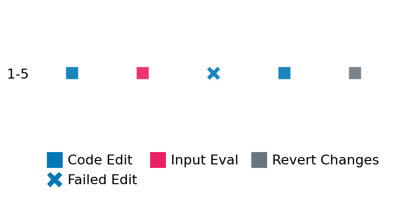

SETTING:
You're an autonomous programmer tasked with solving a specific problem. You are to use the commands defined below to accomplish this task. Every message you send incurs a cost—you will be informed of your usage and remaining budget by the system.
You will be evaluated based on the best-performing piece of code you produce, even if the final code doesn't work or compile (as long as it worked at some point and achieved a score, you will be eligible).
Apart from the default Python packages, you have access to the following additional packages:
- cryptography
- cvxpy
- cython
- dace
- dask
- diffrax
- ecos
- faiss-cpu
- hdbscan
- highspy
- jax
- networkx
- numba
- numpy
- ortools
- pandas
- pot
- psutil
- pulp
- pyomo
- python-sat
- pythran
- scikit-learn
- scipy
- sympy
- torch
YOUR TASK:
Your objective is to define a class named `Solver` in `solver.py` with a method:
```
class Solver:
def solve(self, problem, **kwargs) -> Any:
"""Your implementation goes here."""
...
```
IMPORTANT: Compilation time of your init function will not count towards your function's runtime.
This `solve` function will be the entrypoint called by the evaluation harness. Strive to align your class and method implementation as closely as possible with the desired performance criteria.
For each instance, your function can run for at most 10x the reference runtime for that instance. Strive to have your implementation run as fast as possible, while returning the same output as the reference function (for the same given input). Be creative and optimize your approach!
Your messages should include a short thought about what you should do, followed by a _SINGLE_ command. The command must be enclosed within ``` and ```, like so:
<Reasoning behind executing the command>
```
<command>
```
IMPORTANT: Each set of triple backticks (```) must always be on their own line, without any other words or anything else on that line.
Here are the commands available to you. Ensure you include one and only one of the following commands in each of your responses:
- `edit`: Replace a range of lines with new content in a file. This is how you can create files: if the file does not exist, it will be created. Here is an example:
```
edit
file: <file_name>
lines: <start_line>-<end_line>
---
<new_content>
---
```
The command will:
1. Delete the lines from <start_line> to <end_line> (inclusive)
2. Insert <new_content> starting at <start_line>
3. If both <start_line> and <end_line> are 0, <new_content> will be prepended to the file
Example:
edit
file: solver.py
lines: 5-7
---
def improved_function():
print("Optimized solution")
---
- `ls`: List all files in the current working directory.
- `view_file <file_name> [start_line]`: Display 100 lines of `<file_name>` starting from `start_line` (defaults to line 1).
- `revert`: Revert the code to the best-performing version thus far.
- `reference <string>`: Query the reference solver with a problem and receive its solution. If the problem's input is a list, this command would look like:
```
reference [1,2,3,4]
```
- `eval_input <string>`: Run your current solver implementation on the given input. This is the only command that shows stdout from your solver along with both solutions. Example:
```
eval_input [1,2,3,4]
```
- `eval`: Run evaluation on the current solution and report the results.
- `delete`: Delete a range of lines from a file using the format:
```
delete
file: <file_name>
lines: <start_line>-<end_line>
The command will delete the lines from <start_line> to <end_line> (inclusive)
Example:
delete
file: solver.py
lines: 5-10
```
- `profile <filename.py> <input>`: Profile your currently loaded solve method's performance on a given input. Shows the 25 most time-consuming lines. Requires specifying a python file (e.g., `solver.py`) for validation, though profiling runs on the current in-memory code.
Example:
```
profile solver.py [1, 2, 3]
```
- `profile_lines <filename.py> <line_number1, line_number2, ...> <input>`: Profiles the chosen lines of the currently loaded code on the given input. Requires specifying a python file for validation.
Example:
```
profile_lines solver.py 1,2,3 [1, 2, 3]
```
**TIPS:**
After each edit, a linter will automatically run to ensure code quality. If there are critical linter errors, your changes will not be applied, and you will receive the linter's error message. Typically, linter errors arise from issues like improper indentation—ensure your edits maintain proper code formatting.
**Cython Compilation:** Edits creating or modifying Cython (`.pyx`) files will automatically trigger a compilation attempt (requires a `setup.py`). You will be notified if compilation succeeds or fails. If it fails, the edit to the `.pyx` file will be automatically reverted.
If the code runs successfully without errors, the in-memory 'last known good code' will be updated to the new version. Following successful edits, you will receive a summary of your `solve` function's performance compared to the reference.
If you get stuck, try reverting your code and restarting your train of thought.
Do not put an if __name__ == "__main__": block in your code, as it will not be ran (only the solve function will).
Keep trying to better your code until you run out of money. Do not stop beforehand!
**GOALS:**
Your primary objective is to optimize the `solve` function to run as as fast as possible, while returning the optimal solution.
You will receive better scores the quicker your solution runs, and you will be penalized for exceeding the time limit or returning non-optimal solutions.
Below you find the description of the task you will have to solve. Read it carefully and understand what the problem is and what your solver should do.
**TASK DESCRIPTION:**
Shortest Paths from Indices (Dijkstra)
Compute the lengths of the shortest paths from a specified subset of source nodes to all other nodes in a given weighted, undirected sparse graph. The graph is provided in Compressed Sparse Row (CSR) format components.
Input:
A dictionary with keys representing the CSR graph and source nodes:
- "data": A list of numbers representing the non-zero edge weights.
- "indices": A list of integers representing the column indices corresponding to the "data" values.
- "indptr": A list of integers representing the index pointers into "data" and "indices".
- "shape": A list or tuple `[num_rows, num_cols]` (where num_rows == num_cols == n, the number of nodes).
- "source_indices": A list of integers specifying the indices of the source nodes.
Example input:
{
"data": [1.0, 3.0, 1.0, 2.0, 2.0, 3.0],
"indices": [1, 3, 0, 2, 1, 0],
"indptr": [0, 2, 4, 5, 6],
"shape": [4, 4],
"source_indices": [0, 3]
}
Output:
A dictionary with key:
- "distances": A list of lists representing the shortest path distances. The outer list corresponds to the source nodes in "source_indices", and each inner list contains the distances from that source to all nodes (0 to n-1). Use `None` to represent infinity (no path).
Example output:
{
"distances": [
[0.0, 1.0, 3.0, 3.0], # Distances from node 0
[3.0, 4.0, 6.0, 0.0] # Distances from node 3
]
}
Category: graph
Below is the reference implementation. Your function should run much quicker.
import random
from typing import Any
import numpy as np
import scipy.sparse
import scipy.sparse.csgraph
| 01: def solve(self, problem: dict[str, Any]) -> dict[str, list[list[float]]]:
| 02: """
| 03: Solves the shortest path problem from specified indices using scipy.sparse.csgraph.dijkstra.
| 04:
| 05: Returns only the distances.
| 06:
| 07: :param problem: A dictionary representing the graph (CSR) and source indices.
| 08: :return: A dictionary with key "distances":
| 09: "distances": A list of shortest path distances from the source nodes.
| 10: If multiple sources, shape is (num_sources, n). If one source, shape is (n,).
| 11: Contains floats, uses np.inf for no path.
| 12: Will be converted to use None for infinity.
| 13:
| 14:
| 15: NOTE: Your solution must pass validation by:
| 16: 1. Returning correctly formatted output
| 17: 2. Having no NaN or infinity values
| 18: 3. Matching expected results within numerical tolerance
| 19: """
| 20: try:
| 21: graph_csr = scipy.sparse.csr_matrix(
| 22: (problem["data"], problem["indices"], problem["indptr"]),
| 23: shape=problem["shape"],
| 24: )
| 25: source_indices = problem["source_indices"]
| 26: if not isinstance(source_indices, list) or not source_indices:
| 27: raise ValueError("source_indices missing or empty")
| 28: except Exception as e:
| 29: return {"distances": []}
| 30:
| 31: try:
| 32: dist_matrix = scipy.sparse.csgraph.dijkstra(
| 33: csgraph=graph_csr,
| 34: directed=self.directed,
| 35: indices=source_indices,
| 36: min_only=self.min_only,
| 37: )
| 38: except Exception as e:
| 39: return {"distances": []}
| 40:
| 41: if dist_matrix.ndim == 1:
| 42: dist_matrix_list = [[(None if np.isinf(d) else d) for d in dist_matrix]]
| 43: else:
| 44: dist_matrix_list = [[(None if np.isinf(d) else d) for d in row] for row in dist_matrix]
| 45:
| 46: return {"distances": dist_matrix_list}
| 47:
This function will be used to check if your solution is valid for a given problem. If it returns False, it means the solution is invalid:
import random
from typing import Any
import numpy as np
import scipy.sparse
import scipy.sparse.csgraph
| 01: def is_solution(
| 02: self,
| 03: problem: dict[str, Any],
| 04: solution: dict[str, list[list[float]]],
| 05: ) -> bool:
| 06: """
| 07: Check if the provided shortest path distances are valid.
| 08: Supports both full distance matrices and collapsed minimum distances when min_only=True.
| 09: """
| 10: required = ["data", "indices", "indptr", "shape", "source_indices"]
| 11: if not all(k in problem for k in required):
| 12: logging.error("Problem dictionary missing required keys.")
| 13: return False
| 14:
| 15: n = problem["shape"][0]
| 16: source_indices = problem["source_indices"]
| 17: num_sources = len(source_indices)
| 18:
| 19: if not isinstance(solution, dict) or "distances" not in solution:
| 20: logging.error("Solution format invalid: missing 'distances' key.")
| 21: return False
| 22: proposed_list = solution["distances"]
| 23: if not isinstance(proposed_list, list):
| 24: logging.error("'distances' is not a list.")
| 25: return False
| 26:
| 27: try:
| 28: graph = scipy.sparse.csr_matrix(
| 29: (problem["data"], problem["indices"], problem["indptr"]),
| 30: shape=problem["shape"],
| 31: )
| 32: except Exception as e:
| 33: logging.error(f"Failed to reconstruct graph: {e}")
| 34: return False
| 35:
| 36: try:
| 37: full_ref = scipy.sparse.csgraph.dijkstra(
| 38: csgraph=graph,
| 39: directed=directed,
| 40: indices=source_indices,
| 41: min_only=False,
| 42: )
| 43: except Exception as e:
| 44: logging.error(f"Reference dijkstra failed: {e}")
| 45: return False
| 46:
| 47: if len(proposed_list) == 1 and num_sources > 1:
| 48: try:
| 49: prop_flat = np.array(
| 50: [(np.inf if x is None else x) for x in proposed_list[0]],
| 51: dtype=float,
| 52: )
| 53: except Exception:
| 54: logging.error("Could not convert proposed distances to array.")
| 55: return False
| 56: min_ref = np.min(full_ref, axis=0)
| 57: if np.allclose(prop_flat, min_ref, rtol=1e-5, atol=1e-8):
| 58: return True
| 59: logging.error("Collapsed distances mismatch reference minimum distances.")
| 60: return False
| 61:
| 62: if len(proposed_list) != num_sources:
| 63: logging.error(
| 64: f"'distances' length {len(proposed_list)} != number of sources {num_sources}."
| 65: )
| 66: return False
| 67:
| 68: try:
| 69: prop_arr = np.array(
| 70: [[(np.inf if x is None else x) for x in row] for row in proposed_list],
| 71: dtype=float,
| 72: )
| 73: except Exception:
| 74: logging.error("Could not convert 'distances' list to numpy array.")
| 75: return False
| 76:
| 77: if prop_arr.shape != (num_sources, n):
| 78: logging.error(f"Output shape {prop_arr.shape} != expected ({num_sources}, {n}).")
| 79: return False
| 80:
| 81: for i, src in enumerate(source_indices):
| 82: if not np.isclose(prop_arr[i, src], 0.0, atol=1e-8):
| 83: logging.error(f"Distance from source {src} to itself not zero: {prop_arr[i, src]}")
| 84: return False
| 85: if np.any(prop_arr < 0):
| 86: logging.error("Distance matrix contains negative values.")
| 87: return False
| 88:
| 89: if full_ref.ndim == 1:
| 90: full_ref = full_ref[np.newaxis, :]
| 91: if not np.allclose(prop_arr, full_ref, rtol=1e-5, atol=1e-8, equal_nan=True):
| 92: finite = np.isfinite(prop_arr) & np.isfinite(full_ref)
| 93: diffs = np.abs(prop_arr[finite] - full_ref[finite])
| 94: max_err = np.max(diffs) if diffs.size > 0 else 0
| 95: logging.error(f"Full distances mismatch. Max absolute error: {max_err:.3e}")
| 96: return False
| 97:
| 98: return True
| 99:
 AlgoTuner Trajectory
AlgoTuner Trajectory
AlgoTune Task:
dijkstra_from_indices
Model:
Claude Opus 4
Speedup
Fail
Total Budget
$1.00
Initial System Prompt
AlgoTune Task Description
Shortest Paths from Indices (Dijkstra)
Compute the lengths of the shortest paths from a specified subset of source nodes to all other nodes in a given weighted, undirected sparse graph. The graph is provided in Compressed Sparse Row (CSR) format components.
Input:
A dictionary with keys representing the CSR graph and source nodes:
- "data": A list of numbers representing the non-zero edge weights.
- "indices": A list of integers representing the column indices corresponding to the "data" values.
- "indptr": A list of integers representing the index pointers into "data" and "indices".
- "shape": A list or tuple `[num_rows, num_cols]` (where num_rows == num_cols == n, the number of nodes).
- "source_indices": A list of integers specifying the indices of the source nodes.
Example input:
{
"data": [1.0, 3.0, 1.0, 2.0, 2.0, 3.0],
"indices": [1, 3, 0, 2, 1, 0],
"indptr": [0, 2, 4, 5, 6],
"shape": [4, 4],
"source_indices": [0, 3]
}
Output:
A dictionary with key:
- "distances": A list of lists representing the shortest path distances. The outer list corresponds to the source nodes in "source_indices", and each inner list contains the distances from that source to all nodes (0 to n-1). Use `None` to represent infinity (no path).
Example output:
{
"distances": [
[0.0, 1.0, 3.0, 3.0], # Distances from node 0
[3.0, 4.0, 6.0, 0.0] # Distances from node 3
]
}
Category: graph
Reference Implementation
import random
from typing import Any
import numpy as np
import scipy.sparse
import scipy.sparse.csgraph
def solve(self, problem: dict[str, Any]) -> dict[str, list[list[float]]]:
"""
Solves the shortest path problem from specified indices using scipy.sparse.csgraph.dijkstra.
Returns only the distances.
:param problem: A dictionary representing the graph (CSR) and source indices.
:return: A dictionary with key "distances":
"distances": A list of shortest path distances from the source nodes.
If multiple sources, shape is (num_sources, n). If one source, shape is (n,).
Contains floats, uses np.inf for no path.
Will be converted to use None for infinity.
NOTE: Your solution must pass validation by:
1. Returning correctly formatted output
2. Having no NaN or infinity values
3. Matching expected results within numerical tolerance
"""
try:
graph_csr = scipy.sparse.csr_matrix(
(problem["data"], problem["indices"], problem["indptr"]),
shape=problem["shape"],
)
source_indices = problem["source_indices"]
if not isinstance(source_indices, list) or not source_indices:
raise ValueError("source_indices missing or empty")
except Exception as e:
return {"distances": []}
try:
dist_matrix = scipy.sparse.csgraph.dijkstra(
csgraph=graph_csr,
directed=self.directed,
indices=source_indices,
min_only=self.min_only,
)
except Exception as e:
return {"distances": []}
if dist_matrix.ndim == 1:
dist_matrix_list = [[(None if np.isinf(d) else d) for d in dist_matrix]]
else:
dist_matrix_list = [[(None if np.isinf(d) else d) for d in row] for row in dist_matrix]
return {"distances": dist_matrix_list}Best AlgoTuner-Generated Code
solver.py
import numpy as np
import numba
from numba import njit
from typing import Any
@njit
def dijkstra_from_csr(n, data, indices, indptr, source):
"""Direct Dijkstra on CSR format using numba JIT compilation."""
INF = 1e20
dist = np.full(n, INF, dtype=np.float64)
dist[source] = 0.0
visited = np.zeros(n, dtype=np.bool_)
# Simple priority queue using arrays
heap_dist = np.full(n, INF, dtype=np.float64)
heap_node = np.arange(n, dtype=np.int32)
heap_size = 0
# Add source to heap
heap_dist[0] = 0.0
heap_node[0] = source
heap_size = 1
while heap_size > 0:
# Find minimum in heap (linear search for simplicity)
min_idx = 0
min_dist = heap_dist[0]
for i in range(1, heap_size):
if heap_dist[i] < min_dist:
min_dist = heap_dist[i]
min_idx = i
# Extract minimum
u = heap_node[min_idx]
d = heap_dist[min_idx]
# Remove from heap by swapping with last element
heap_size -= 1
if min_idx < heap_size:
heap_dist[min_idx] = heap_dist[heap_size]
heap_node[min_idx] = heap_node[heap_size]
if visited[u]:
continue
visited[u] = True
# Process neighbors from CSR
start = indptr[u]
end = indptr[u + 1]
for idx in range(start, end):
v = indices[idx]
w = data[idx]
if not visited[v]:
alt = d + w
if alt < dist[v]:
dist[v] = alt
# Add to heap
heap_dist[heap_size] = alt
heap_node[heap_size] = v
heap_size += 1
return dist
class Solver:
def __init__(self):
# Warm up numba JIT compilation
try:
dummy_data = np.array([1.0, 1.0], dtype=np.float64)
dummy_indices = np.array([1, 0], dtype=np.int32)
dummy_indptr = np.array([0, 1, 2], dtype=np.int32)
dijkstra_from_csr(2, dummy_data, dummy_indices, dummy_indptr, 0)
except:
pass
def solve(self, problem: dict[str, Any]) -> dict[str, list[list[float]]]:
"""
Solves the shortest path problem using optimized Dijkstra implementation.
"""
try:
# Convert to numpy arrays with appropriate dtypes
data = np.asarray(problem["data"], dtype=np.float64)
indices = np.asarray(problem["indices"], dtype=np.int32)
indptr = np.asarray(problem["indptr"], dtype=np.int32)
n = problem["shape"][0]
source_indices = problem["source_indices"]
if not isinstance(source_indices, list) or not source_indices:
return {"distances": []}
except Exception:
return {"distances": []}
try:
distances = []
for source in source_indices:
dist = dijkstra_from_csr(n, data, indices, indptr, source)
# Convert to list with None for infinity
dist_list = []
for d in dist:
if d >= 1e20:
dist_list.append(None)
else:
dist_list.append(float(d))
distances.append(dist_list)
return {"distances": distances}
except Exception:
return {"distances": []}Speedup vs Budget Plot
Speedup vs Budget
No performance data available for plotting
Action Sequence
